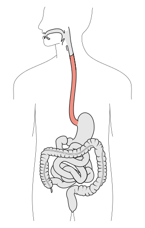

El esófago humano discurre por el cuello y por la región posterior del tórax ( mediastino posterior), hasta introducirse en el abdomen superior de forma anterior, atravesando el diafragma.
Se extiende desde el nivel de la sexta o séptima vértebra cervical hasta la undécima vértebra torácica.
